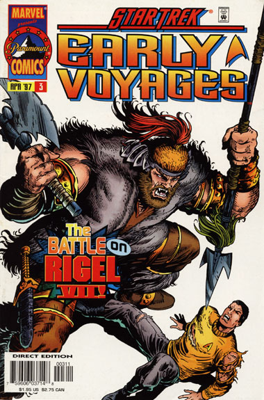

|


|
Gnese
| Episdios I Reflexes
| Palavras do autor | Palavras
do artista Star Trek
Early Voyages, n 03 abril de 1997  Histria: Dan Abnett e Ian Edginton Material produzido por Salvador Nogueira para o Trek Brasilis
Data Estelar: 2385.7 Sinopse: A Enterprise vai at Rigel VII, onde Pike e sua tripulao vo participar de um festival comemorativo que marcar a aceitao do planeta na Federao. Antes uma cultura extremamente violenta, os Rigelianos agora esto tendo de se desfazer dos Kaylar, raa que compe os guerreiros sanguinrios, para poderem se juntar comunidade galctica. Um grupo de descida da Enterprise recebido pelo ministro Etashnan e sua assistente, Talza, e Pike autoriza licena para parte da equipe da nave. Enquanto a tripulao vai at a cidade, Pike levado por Talza para a Fortaleza Zemtar, o antigo abrigo dos Kaylar e local em que ser realizada a cerimnia. Ainda um pouco incomodado por estar separado de seus colegas, Pike tenta contatar seu ordenana, Dermot Cusack, s para descobrir que algo est interrompendo as comunicaes. Logo outros tripulantes da Enterprise comeam a perceber que no conseguem mais nem se comunicar nem entre si, nem com a nave. Dermot logo percebe que no se trata de um defeito nos comunicadores, mas no h tempo de reagir quando os Kaylar comeam a atacar os visitantes da Enterprise em um bar local, sem razo aparente. Da mesma maneira, Pike sofre o ataque de um Kaylar na fortaleza. Ele ordena que Talza fuja o mais rapidamente possvel, o que ela faz sem hesitao, embora no parea muito preocupada com o ataque do guerreiro. No bar, dois tripulantes so mortos antes que os restantes consigam fugir do ataque, e outros sete ficam feridos, incluindo Spock. Pike, com mais sorte, consegue matar seu oponente e correr de volta cidade. Sob o comando de Dermot, os tripulantes da Enterprise tentam criar um plano para escapar dali. Nano, o oficial de comunicaes, altera seu comunicador para que ele detecte a fonte da interferncia que impede que se faa contato com a Enterprise. Usando o comunicador modificado, Dermot descobre que o equipamento que est bloqueando os sinais est na Assemblia Parlamentar Rigeliana. Ele desativa o mecanismo e abre contato com a Enterprise, mas morto por uma punhalada, desferida por ningum menos que Talza. Mesmo com o relato parcial de Dermot, a Nmero Um, no comando da nave, despacha um grupo de descida armado para oferecer apoio aos tripulantes em terra, o que os salva de um definitivo ataque Kaylar. Com os atacantes detidos, descobre-se que tudo no passou de uma conspirao de radicais Rigelianos, que no queriam ver seu planeta renunciando sua cultura para se juntar Federao. Pike e sua equipe so parabenizados pelo Comando da Frota Estelar, e a Federao recusa a incluso de Rigel VII em seus quadros. A Enterprise pode partir, mas seu capito ainda precisa lidar com o sofrimento gerado pela morte de seu ordenana e grande amigo, Dermot Cusack.
Comentrios "Our Dearest Blood" cria o pano de fundo perfeito para "The Cage", representando os momentos que antecederam o nico episdio televisivo produzido com o capito Christopher Pike e sua tripulao. incrvel como uma histria em quadrinhos escrita mais de 30 anos depois do primeiro piloto de Jornada nas Estrelas consegue acrescentar a ele tanta dimenso e realismo. Fica explicada aqui a tremenda crise de conscincia que Pike enfrenta em "The Cage". No s seu ordenana e melhor amigo foi morto durante a misso, como Pike no estava presente para defend-lo, mais ocupado passeando com uma bonita mulher Rigeliana. Outros detalhes interessantes so adicionados histria, mas que imprimem ainda maior realismo a "The Cage". No piloto, por exemplo, Spock andava meio manco. Na verdade, era um maneirismo criado por Leonard Nimoy para representar um "andar aliengena". Esse aspecto de Spock foi dispensado aps o primeiro piloto, e Spock nunca mais foi "manco" novamente --o que deixava a atuao de Nimoy em "The Cage" inexplicvel. No mais, pois agora descobrimos que Spock manquitola em "The Cage" depois de sofrer um ferimento em sua perna. O toque bem sutil, e s os que se lembram com vivacidade do piloto pegam a sacada, mas nada menos que genial. Voc v Spock sendo enfaixado na perna direita e pensa consigo mesmo: "ah... ento foi assim que aconteceu!" Simplesmente brilhante. A histria no s fornece um brilhante contexto para a morte do ordenana Cusack, mas tambm mostra que grande aventura foi Rigel VII, e por que Pike estava to "cansado da vida" no piloto original. Nesse sentido, o enredo tem mrito prprio, e d vida aos aliengenas e as cenas que s vimos em "The Cage" revividas em iluses Talosianas. H tambm uma cena desconectada do enredo, mas que mostra que teremos surpresas com o doutor Boyce no futuro --aqui ele fala sozinho como se estivesse combatendo uma presena aliengena dentro de si. Essa a vantagem de se produzir uma "srie" em quadrinhos, e no apenas um "episdio": possvel plantar temas e enredos em edies anteriores, para aumentar a curiosidade do pblico e dar mais realismo s histrias que apareceriam depois. Um belo movimento. A arte continua com o brilho de sempre, e Rigel VII est exatamente igual ao que vimos em "The Cage". Quer dizer, na verdade, alm de bonito, agora est maior e melhor. E se essa edio precede imediatamente os eventos do piloto original, possvel antecipar o que vem por a a seguir...
|